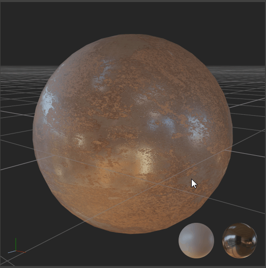
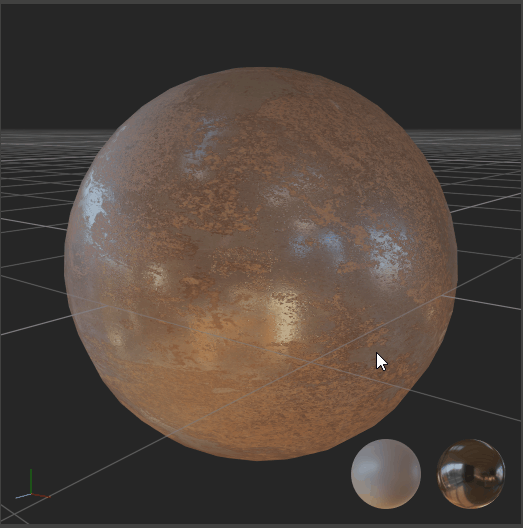

my-history
2019.9 ~ 至今
广州市·咏声动漫
研究开发中心 - 实时渲染
研究开发中心 - Pipeline
 
 2018.8 ~ 2019.9
杭州市·黑岩网络
动画部 - Houdini特效师
2017.2 ~ 2017.9
塔城市·❓
🚫
2015.11 ~ 2016.11
乌鲁木齐市·希尔顿酒店
客房送餐员
2014.12 ~ 2015.7
石河子市·军垦汽车城
汽车维修工
2013.3 ~ 2016.1
沙湾县中等职业技术学校
"汽车运用与维修" 专业
广州市·咏声动漫
研究开发中心 - 实时渲染
研究开发中心 - Pipeline
杭州市·黑岩网络
动画部 - Houdini特效师
塔城市·❓
🚫
乌鲁木齐市·希尔顿酒店
客房送餐员
石河子市·军垦汽车城
汽车维修工
沙湾县中等职业技术学校
"汽车运用与维修" 专业